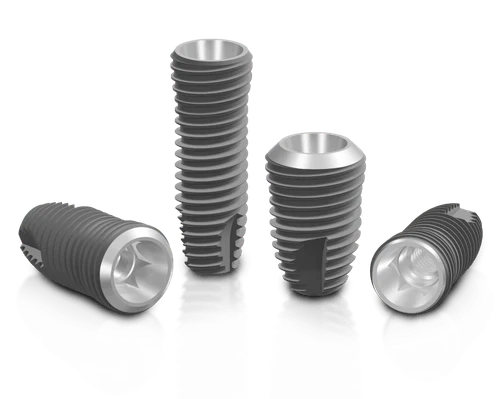
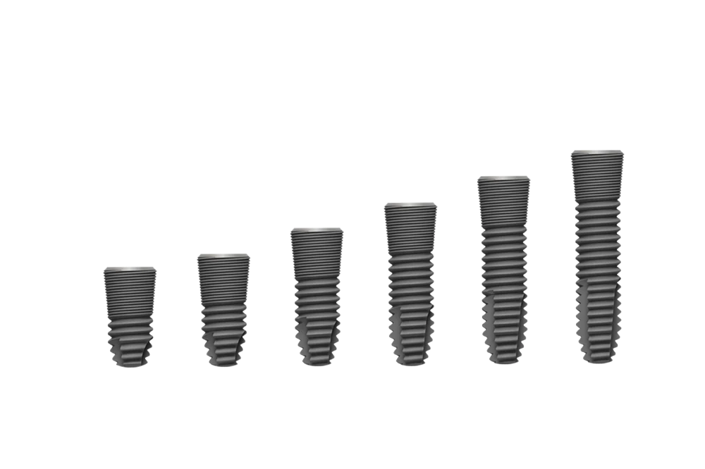
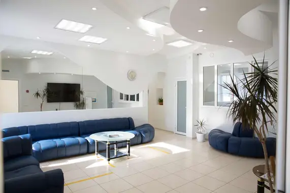
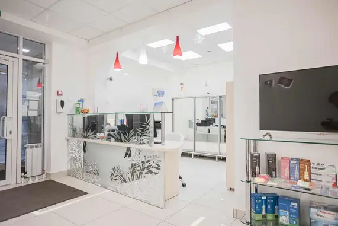
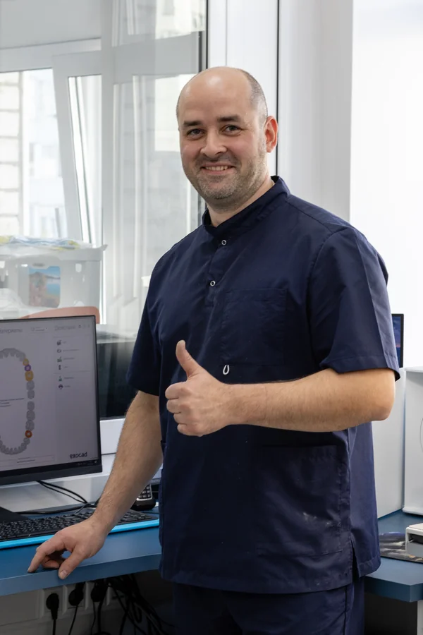
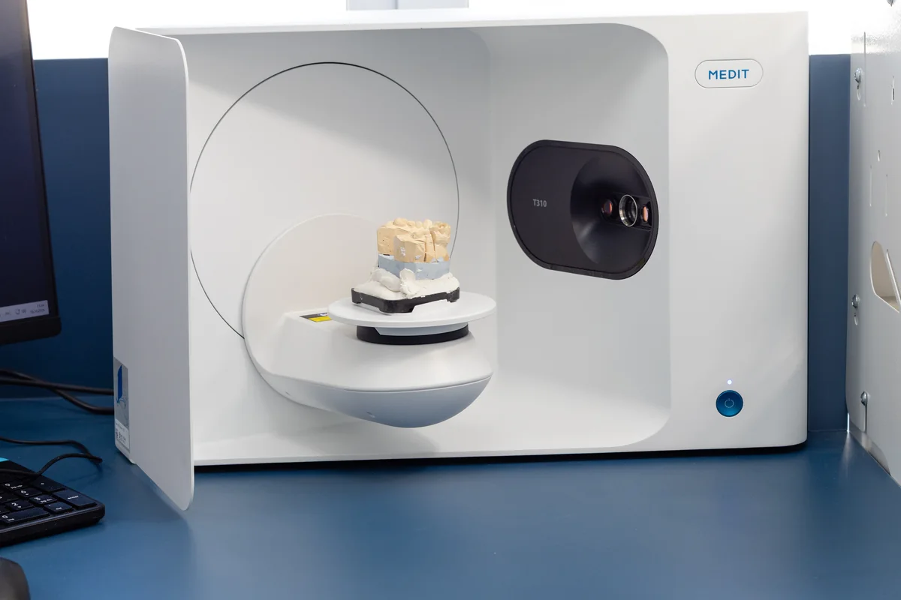
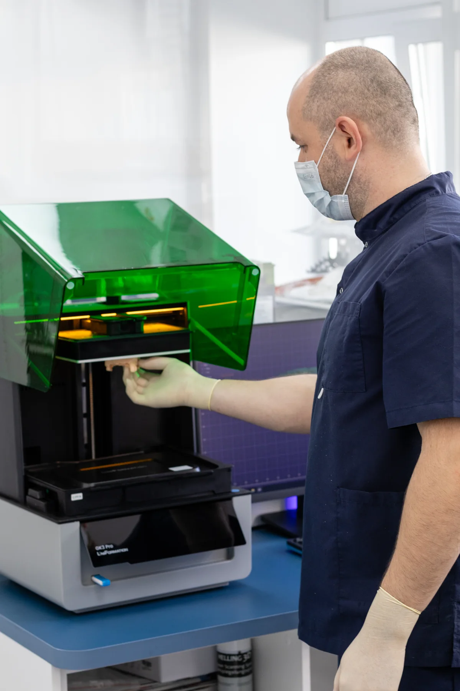
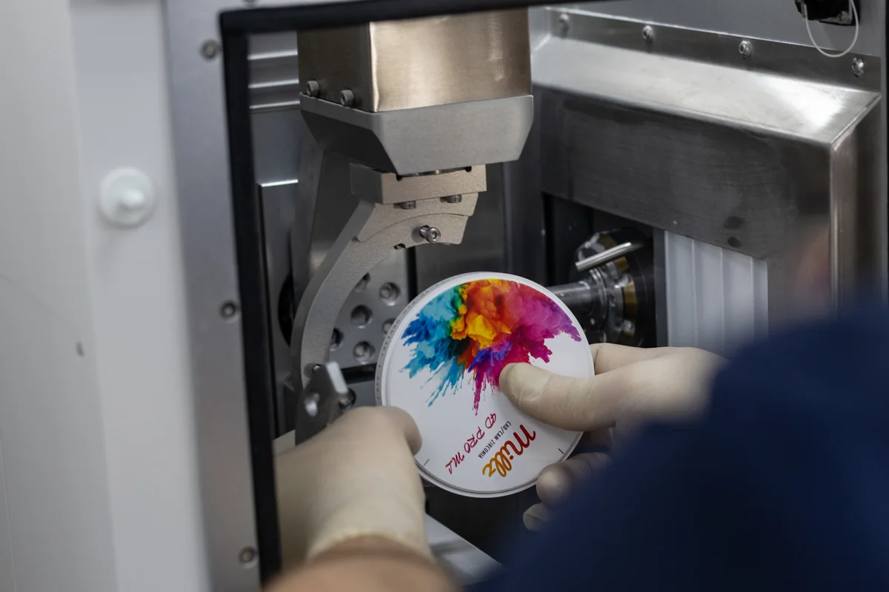
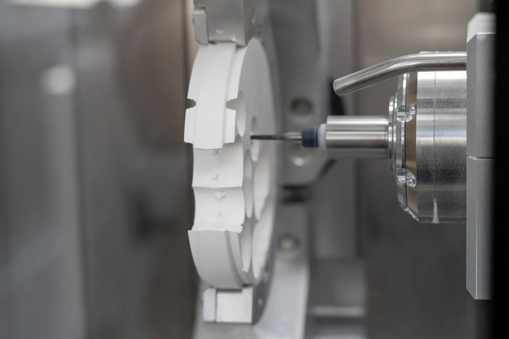

Dentium
Чаще выбирают
- Страна
- Южная Корея
- Материал коронки
- Металлокерамика или оксид циркония
- Гарантия клиники
- 1 год — условия
- Цена за один зуб
- от 55 500 ₽
Работаем с 1999 года
Dentium с постоянной коронкой
от 55 500 ₽
Своя зуботехническая лаборатория.
Бесплатные контрольные осмотры раз в 6 месяцев.
Осмотр, план лечения и смета за один визит
Цена с металлокерамической коронкой. Диагностика, анестезия и дополнительные процедуры оплачиваются отдельно.
УСЛУГИ
Имплант устанавливают в день удаления зуба, если состояние кости и десны позволяет.
от 55 500 ₽
Об установке после удаления 02 / ВСЯ ЧЕЛЮСТЬAll-on-4 — несъёмный протез на четырёх имплантах для одной челюсти.
от 722 000 ₽
Метод и стоимость 03 / ВСЯ ЧЕЛЮСТЬAll-on-6 — несъёмный протез на шести имплантах для одной челюсти.
от 894 000 ₽
Метод и стоимость 04 / КОРОНКИ И ПРОТЕЗЫВосстановление зубов коронками, съёмными протезами и конструкциями на имплантах.
{{TODO: цена от}}
Протезирование и ценыЦЕНЫ
Имплант с постоянной коронкой или протез на одну челюсть. Цены без скидок.


На фото — Dentium SuperLine и Astra Tech EV. Модель и размер импланта подбирает врач.
722 000 ₽
ЧТО ВХОДИТ
894 000 ₽
ЧТО ВХОДИТ
Дополнительные процедуры, диагностика и анестезия рассчитываются отдельно. Для одного зуба временная коронка не включена; для All-on-4/6 временный протез включён. Итоговый состав согласуется после обследования.
Профессиональная гигиена оплачивается отдельно.
{{TODO: рассрочка от X ₽/мес}}
ОПЫТ ПАЦИЕНТОВ
Имплантация
«Обратилась по поводу имплантации по совету папы, который проходил полную имплантацию у Сархана Гамлетовича.»Читать полный отзыв
Имплантация
«После осмотра был составлен план лечения, причем без навязывания каких-либо дополнительных услуг.»Читать полный отзыв
Протезирование
«Работой очень довольна! И цвет, и форма зубов получились такими, как и хотела.»Читать полный отзыв
Отзывы с ПроДокторов. Результаты лечения могут отличаться.
Смотреть ещё отзывыВРАЧИ PREMIER
Проводят удаление зубов, установку имплантатов и контрольные осмотры после операции.
Опыт работы более 8 лет
Стоматолог-хирург · Имплантолог · Стоматолог-ортопед · Стоматолог-терапевт
О врачеЭТАПЫ ЛЕЧЕНИЯ
Врач проводит осмотр, изучает снимки и отвечает на ваши вопросы.
КОНСУЛЬТАЦИЯОбсуждаем подходящий метод, этапы, сроки и стоимость.
СТОИМОСТЬ И СРОКИПроводим лечение по согласованному плану: установка импланта и протезирование.
ЛЕЧЕНИЕВрач объясняет правила ухода и рекомендует график контрольных посещений.
НАБЛЮДЕНИЕНАБЛЮДЕНИЕ И УСЛОВИЯ ГАРАНТИИ
Осмотр и снятие швов — через 10 дней после операции.
Профилактические осмотры раз в 6 месяцев бесплатные.
Гарантия 1 год на стабильность имплантата и несъёмные ортопедические конструкции действует при соблюдении условий договора:
При признанном гарантийном случае замена имплантата и повторная операция бесплатны.
КЛИНИКА НА ПУШКИНА, 4
Работаем в Набережных Челнах с 1999 года. Принимаем по адресу: Пушкина, 4 (45/05).
Пушкина, 4 — как добраться

ЗУБОТЕХНИЧЕСКАЯ ЛАБОРАТОРИЯ
Коронки и протезы изготавливают в собственной лаборатории клиники. Для работы используют 3D-сканер, принтер и фрезерное оборудование.

Зубной техник




ВОПРОСЫ ПАЦИЕНТОВ
Dentium с постоянной металлокерамической коронкой — 55 500 ₽, с коронкой из оксида циркония — 65 000 ₽. Astra Tech с коронкой из оксида циркония — 124 000 ₽. Диагностика, анестезия, временная коронка и дополнительные процедуры оплачиваются отдельно. Их стоимость добавляют в расчёт после обследования.
Да, если состояние костной ткани и десны позволяет установить имплантат. Это называется одномоментной имплантацией. Временную коронку в день операции ставят по показаниям, постоянную — после заживления. Воспаление и другие противопоказания могут потребовать отложить имплантацию.
All-on-4 — 722 000 ₽, All-on-6 — 894 000 ₽ за одну челюсть. В суммы входят имплантаты, пластика десны, мультиюниты, временный и постоянный протезы. Дополнительная подготовка, диагностика и анестезия оплачиваются отдельно.
Коронку на один имплантат обычно устанавливают через 3–4 месяца после операции, протез All-on-4/6 — через 4–6 месяцев. Подготовка и дополнительные вмешательства могут увеличить срок. Перед протезированием врач проверяет заживление.
Клиника «Премьер»: Набережные Челны, ул. Пушкина, 4 (45/05). Телефон для записи: +7 (8552) 52-90-90. Администратор поможет выбрать специалиста и время приёма.
Возьмите имеющиеся снимки и планы лечения. Расскажите врачу о хронических заболеваниях, лекарствах, которые принимаете, и предыдущем лечении зубов. Новые исследования заранее проходить не нужно — врач назначит их при необходимости.
КОНТАКТЫ
Позвоните или оставьте номер телефона — администратор согласует время приёма.
Набережные Челны
ул. Пушкина, 4 (45/05)
Пн–Пт: 08:00–20:00
Сб: 08:00–14:00